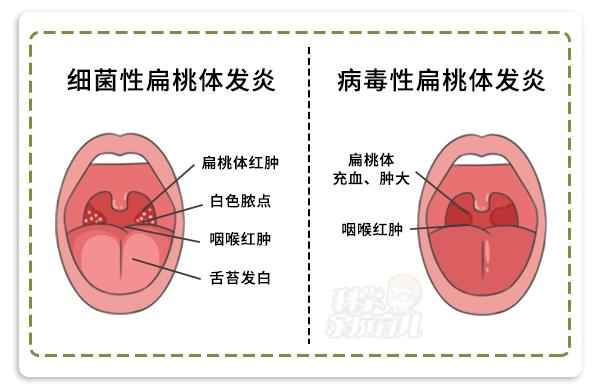

5 月 24 日-5 月 26 日去南昌出差，三天基本没有午睡，晚上又没有休息好，食物多是多油且极辣的，导致感冒了。26 日早上喉咙有点干渴，而后双臂开始发酸，没有重视，下午到晚上开始发冷、疲劳。
27、28 日勉强带着疲劳的身躯度过工作日，29、30 日周末开始喉咙痛。喉咙痛是扁桃体的发炎。包扁桃体发炎可分为以下两种：

- 病毒感染
病毒性扁桃体炎是自限性疾病，一般一周左右可以自愈，没有特效药，依靠自身的体抗力和疾病的自限性，可以用一些清热解毒的药物缓解症状。
划重点：抗生素没用。
- 细菌感染
按医生规定量服用抗生素，可以口服青霉素类、头孢菌素抗菌药物，例如：阿莫西林、阿莫西林克拉维酸等。
头孢类抗生素抗菌谱更广，也可作为一线治疗药物。
注意：即使吃药后两三天后觉得症状已经好转或完全消失，也要坚持吃，否则细菌没有被完全杀灭，会再次卷土重来，还有可能出现抗药性。
如何缓解咽喉疼痛
① 喝点蜂蜜水可以缓解喉咙痛，蜂蜜柠檬水孩子一般也喜欢喝、但 1 岁之内的 不要喝蜂蜜水。
② 让 多喝水，最好是温开水，太冷太热的水都会刺激 咽喉；
③ 热水袋灌上温水热敷颈部能缓解咽喉不适，注意不要烫伤；